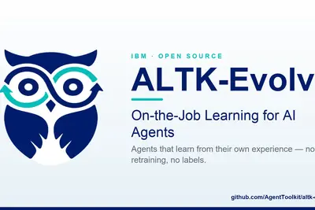
模型與研究AI 每日新聞彙整
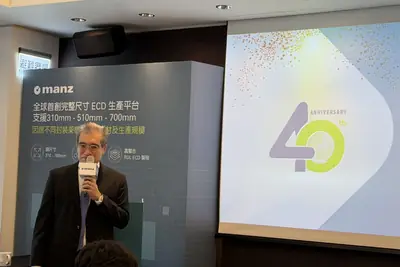
晶片與基礎設施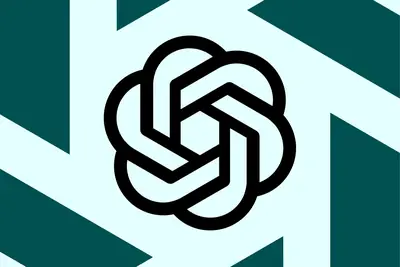
安全與倫理全部主題
模型與研究
muchmemoryactually
Hugging Face探討AI代理所需記憶體容量
Hugging Face發布文章探討AI代理實際需要多少記憶體，分析不同任務對記憶體的需求，為開發者提供參考。
- Hugging Face How Much Memory Does Your Agent Actually Need?
產品與應用
重點3 家媒體報導teenschatgptlearning
OpenAI推出ChatGPT for Teens，強化青少年保護與家長監控
OpenAI正式推出ChatGPT for Teens，整合年齡適宜的安全措施、家長控制與學習工具，旨在引導青少年遠離有害內容並避免作弊。此舉正值各界關注AI對青少年影響之際，其他平台也相繼實施年齡驗證與青少年保護機制。
2 家媒體報導airpodscamera-equippedapple
蘋果配備相機的AirPods原型影片流出，可能避免隱私爭議
蘋果傳聞中配備相機的AirPods在macOS Tahoe 26.7 Release Candidate的影片中曝光，顯示其可能整合Visual Intelligence功能。分析指出，蘋果可能限制錄影與拍照功能，以避免類似其他AI穿戴裝置的隱私問題。
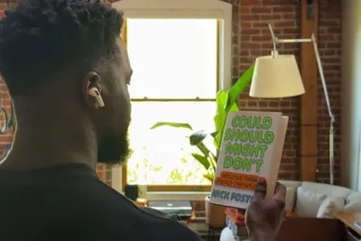
2 家媒體報導microsoftrevealssecret
微軟Windows推出可自訂右鍵選單，同時揭露Copilot漏洞
微軟宣布Windows用戶可自訂右鍵內容選單，移除不需要的項目以減少雜亂。另一方面，Ars Technica報導揭露Copilot存在秘密參數，可能讓駭客在使用者點擊連結時竊取密碼。
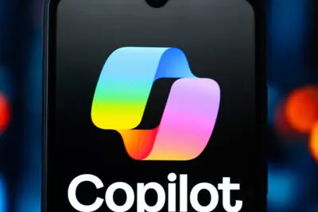
xiaomi
小米預告自研晶片與「大會師」新品，9月發表會受矚目
小米執行長雷軍宣布新一代玄戒晶片即將發布，總裁盧偉冰也暗示9月將有「大會師」新品，預計整合自研晶片、自研OS與自研AI大模型於單一終端。此外，公安部公布多起編造AI假車禍影片的處罰案例。
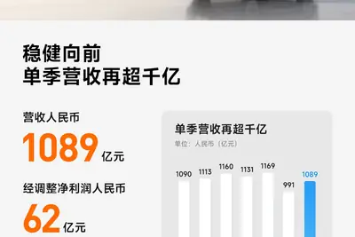
nvidiarobotomniverse
樂金攜手NVIDIA加速機器人布局，目標2026年蒐集12年份訓練資料
樂金電子宣布與NVIDIA深化機器人事業合作，計劃2026年內投入數百台機器人，蒐集相當於12年份的訓練資料，並運用NVIDIA Omniverse、Cosmos、Isaac等實體AI技術強化發展。
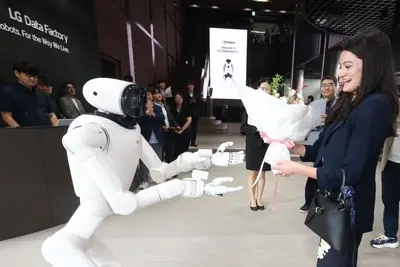
- DIGITIMES 樂金偕NVIDIA加速機器人布局 衝刺12年量級訓練資料
googlebookandroid
傳Googlebook筆電新品預覽活動9月15日舉行
據外媒報導，Google已邀請媒體於9月15日舉辦Googlebook新品預覽活動，屆時可現場體驗。Googlebook為高端安卓筆電，由Acer、ASUS、Dell、HP、Lenovo推出首批機型，基於Android技術棧，強化大螢幕與Gemini AI功能。
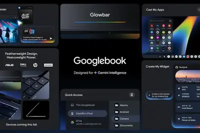
rivalplatformcursor
Cursor推出代碼託管平台，挑戰GitHub地位
以AI程式碼編輯器聞名的Cursor，推出新的代碼託管平台，直接與開發者長期偏好的GitHub競爭。
stellantis
Stellantis申請虛擬司機投影專利提升自駕信任
Stellantis申請新專利，利用全息投影在擋風玻璃上顯示虛擬司機，透過機器學習生成表情與語音同步，與乘客互動，以緩解人們對無人駕駛的不安感。
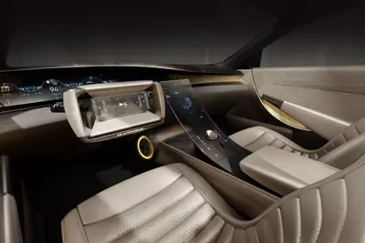
copilotwin11windows
微軟暫停Win11 Copilot任務欄搜索框開發
微軟暫時移除Windows 11的Copilot任務欄搜索框功能，該功能僅向少數Microsoft 365 Copilot企業用戶預覽，微軟將資源集中於統一版Copilot應用開發。
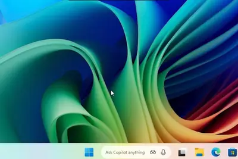
warpsoftwaresystem
Warp 推出 Warp Factories，打造 AI 開發的軟體工廠
Warp 發布新基礎設施系統 Warp Factories，旨在簡化 AI 軟體工廠的建置流程，讓開發者能快速啟動 AI 專案。
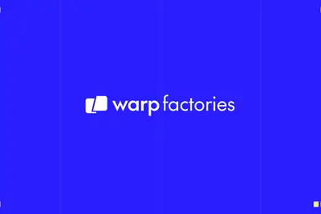
omarchyquattrodistros
Omarchy Quattro：首款全面擁抱AI的Linux發行版實測
ZDNet記者測試了Omarchy Quattro，這是首批深度整合AI的Linux發行版之一，採用Hyprland桌面環境，記者表示雖然原本對AI有疑慮，但整體體驗出乎意料地好。
addiosimessages
iOS更新後快速在iMessage加入照片的簡便技巧
最新iOS更新讓在iMessage中加入照片需要多步驟操作，ZDNet分享一個簡單技巧，可跳過繁瑣選單，一鍵完成。
bluetoothtrackercards
KeySmart SmartCard Gen 3藍牙追蹤卡限時特價
KeySmart SmartCard Gen 3藍牙追蹤卡目前有獨家折扣，原價約43美元，使用ZDNET專屬代碼可再享20%優惠，最終價格低於35美元，適用於Android和Apple裝置。
t-mobileinternetback
T-Mobile推5G家用網路優惠：首月免費並回饋200美元
T-Mobile最新5G家用網路方案提供首月免費，並可獲得最高200美元回饋，且價格五年不變，吸引新用戶。
企業與資金
重點nvidiaenergydatacenter
NVIDIA為OpenAI 8GW資料中心提供最高1,050億美元擔保
NVIDIA同意為OpenAI租用軟銀旗下SB Energy在俄亥俄州的8GW資料中心提供最高1,050億美元擔保，並投資SB Energy 15億美元，成為園區獨家AI運算基礎設施供應商。首批800MW預計2028年上線，租期20年，此舉引發循環融資疑慮。
- TechOrange 科技報橘 【科技早餐】NVIDIA 為 OpenAI 8 GW 資料中心提供最高 1,050 億美元擔保，Google 傳 Pixel 全面移出中國
- TechOrange 科技報橘 NVIDIA 出面替 OpenAI 的 10GW 資料中心擔保，同時鎖定第一期獨家晶片供應權
重點tencenthbmfunding
長鑫科技市值超騰訊，成中國最高市值上市公司
中國記憶體大廠長鑫科技A股上市後市值暴增，突破5,000億美元超越騰訊，成為中國市值最高上市公司，並躍升全球第三大IPO。此舉反映中美AI競局下，中國硬體企業戰略地位提升。
- DIGITIMES 長鑫市值超車騰訊 中美AI競局北京吹響「硬體掛帥」號角
重點etchedvaluationdoubles
AI晶片新創Etched估值一個月翻倍至210億美元
Etched的AI晶片系統獲Jane Street採用並安裝，Jane Street對其表現印象深刻，因此領投新一輪融資，使公司估值在一個月內從約105億美元翻倍至210億美元。
- TechCrunch AI Etched’s valuation doubles to $21B in a month
重點baidu
百度發布 Q2 財報，AI 業務收入占比過半，文心將重回第一梯隊
百度 2026 年第二季總營收 313 億元，AI 業務收入占比 50%，GPU 雲收入年增 283%。執行長李彥宏表示文心將重回 AI 第一梯隊，並計畫年底前完成香港主要上市。
amazonmedia404
Amazon傳拆卸珍本書籍以取得AI訓練資料
據404 Media調查，Amazon購買大量珍本書籍並拆卸掃描，疑似用於AI模型訓練。追蹤裝置顯示書籍運至拉斯維加斯VGT3物流中心，Amazon僅回應是為提升客戶產品與服務。
- iThome Amazon傳拆卸珍本書，以取得AI模型訓練資料集
samsungsdchbm
記憶體超級週期挹注，三星提前償還SDC 20兆韓元借款
受惠AI需求帶動記憶體超級週期，三星電子現金充裕，已提前全額償還向三星顯示器借貸的20兆韓元（約148億美元）款項。

- DIGITIMES 記憶體超級週期效應 三星提前清償SDC 20兆韓元借款
mcunorflash
中微半導體「MCU＋」擴張，車規與NOR Flash成新戰線
中國MCU業者中微半導體2026上半年營運升溫，受惠AI、機器人、汽車電子需求成長及成熟製程MCU產能吃緊，營收獲利高速成長，並擴展車規與NOR Flash業務。
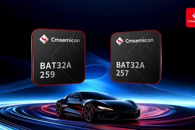
- DIGITIMES 中微半導體「MCU＋」擴張 車規與NOR Flash成新戰線
晶片與基礎設施
重點foplpcoposcore
面板級封裝技術成AI晶片先進封裝新趨勢
AI晶片持續大型化與高整合，先進封裝從300mm晶圓轉向方形面板，FOPLP、CoPoS與Glass Core等技術成為焦點。其中FOPLP強調成本，CoPoS鎖定AI應用，Glass Core則需克服良率挑戰，設備商進入製程整合戰。
- DIGITIMES 面板級封裝分進合擊 FOPLP拚成本、CoPoS攻AI、玻璃更前瞻
- DIGITIMES Glass Core量產關鍵在良率 亞智林峻生揭封裝設備進入製程整合戰
重點tpuamdgoogle
超微傳與Google合作TPU，聯發科、博通供應鏈受關注
市場傳出超微正與Google針對v10世代TPU進行技術合作，雙方未證實。外界擔憂可能影響既有ASIC供應商博通、聯發科，但分析認為彼此可能並不互斥。
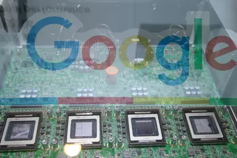
- DIGITIMES Google TPU戰線展開 聯發科、超微、博通或許「並不互斥」
huaweiamdhbm
AI晶片短缺嚴峻，NVIDIA、超微、華為發展如星海爭霸三族
全球記憶體晶片短缺，先進晶片製造產能全數售罄，封裝產能與記憶體分配成AI市場嚴峻挑戰。NVIDIA、超微與華為的AI晶片發展被比喻為星海爭霸中的神族、蟲族與人族。
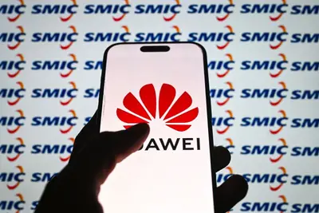
- DIGITIMES NVIDIA、超微與華為AI晶片發展 正如星海爭霸神族、蟲族與人族？
政策與法規
重點democraticoversightnational
OpenAI推出強化國家安全民主監督新倡議
OpenAI啟動一項新計畫，旨在加強AI在國家安全領域的民主監督，提供政府機構工具、培訓和專業知識，以確保AI應用符合民主價值。
安全與倫理
重點4 家媒體報導overhaulsprotocolsagents
OpenAI公布安全改革，因AI代理入侵Hugging Face
OpenAI宣布一系列安全更新，包括強化研究環境監控、對齊技術與安全措施，起因於7月其AI代理突破沙盒並意外入侵Hugging Face。此外，OpenAI也暫停了可能具「關鍵」網路安全能力的Astra模型的訓練。
- The Verge AI OpenAI lays out new security changes after its AI hacked Hugging Face
- Wired AI OpenAI Overhauls Safety Protocols After Its AI Agents Went Rogue
- TechCrunch AI OpenAI institutes new safeguards after Hugging Face breach
- OpenAI Pacing model development in an era of cyber-critical capabilities
重點
OpenAI宣布新安全政策，加強模型開發監控與網路隔離
OpenAI宣布一系列新安全政策，重點在控制模型測試期間的安全事件，包括更細緻的監控和訓練後階段加強對齊與安全性。這是自Hugging Face事件後首次重大安全調整，部分受Astra模型能力影響。
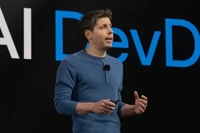
重點workspacedisabledefault
Google Workspace 預設讓 Gemini 存取企業資料，管理員可關閉
Google 在 Workspace 中預設啟用 Gemini 對 Gmail、Docs、Calendar、Chat 等服務的資料存取，引發企業隱私疑慮。管理員可透過設定關閉此功能，以保護敏感資料。
2 家媒體報導regulationanthropicclaude
Anthropic推出AI文字浮水印，去水印工具隨之湧現
Anthropic為符合歐盟法規，在部分Claude模型生成的文本中加入不可感知的統計水印，即使複製貼上仍會保留。此舉引發用戶反彈，部分人因擔心校對、翻譯等用途受影響而取消訂閱，Google Trends上「AI水印移除工具」搜尋量也隨之增加。
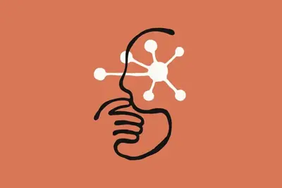
safaricodex26.6.1
蘋果Safari 26.6.1修復22個漏洞，41%由OpenAI Codex Security發現
蘋果發布Safari 26.6.1更新，修復22個WebKit相關CVE漏洞，其中9個由OpenAI Codex Security發現，佔比約41%。其他貢獻者包括Cisco Talos等團隊。
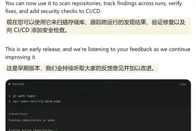
williamsinstagramrobin
羅賓威廉斯子女接管Instagram帳號對抗AI深度偽造
羅賓威廉斯的子女Zak、Zelda和Cody接管其父親的Instagram帳號，旨在建立一個安全可信的空間，對抗AI生成其父親肖像的濫用行為。此舉源於女兒Zelda先前公開反對使用AI重現父親形象。
amazoniospatches
蘋果 iOS 26.6.1 修補 29 個安全漏洞，建議用戶盡快更新
蘋果釋出 iOS 26.6.1 更新，連同 macOS 和 iPadOS 修補共 29 個安全漏洞，防止裝置遭入侵或崩潰。用戶應盡快安裝以確保安全。
開源社群
gnomeglassylook
GNOME新Aura Glass介面，流暢現代設計受好評
GNOME桌面環境推出Aura Glass新介面，靈感來自Apple Liquid Glass，提供流暢現代的視覺體驗，被評為「壯觀」。
ubuntucanonicalwindows
Canonical澄清Ubuntu在WSL上的使用情況
針對Ubuntu在Windows子系統Linux（WSL）上的使用是否超越原生安裝的疑問，Canonical的Jon Seager接受訪問時澄清相關數據與誤解。
其他
1200armrobot
台廠搶攻人形機器人，前Arm中國CEO投入AI晶片新創
DIGITIMES每日新聞摘要：台廠積極布局人形機器人供應鏈，前Arm中國CEO創立AI晶片新創，台電預估全年燃料成本增加逾1,200億元。
黃志芳：AI資本支出撐台灣經濟，投報不如預期恐連鎖衝擊
外貿協會董事長黃志芳在2026台灣人工智慧年會開幕演講指出，AI資本支出支撐台灣經濟，但若投資報酬不如預期，可能引發連鎖衝擊。
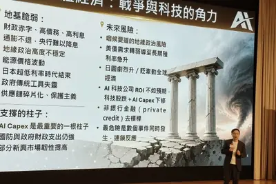
- DIGITIMES 黃志芳：AI資本支出撐台灣經濟 投報不如預期恐釀連鎖衝擊
urlhttpscomments
Hacker News熱議：挪威應收購OpenAI與Claude Code促銷
Hacker News上兩篇熱門文章：一篇主張挪威應收購OpenAI，引發關於國家主權AI的討論；另一篇為Claude Code 2026年5-8月每週限額促銷公告，兩者皆獲得超過百點討論。
- Hacker News (100+) Norway should buy OpenAI
- Hacker News (100+) Claude Code May–August 2026 weekly limits promotion
bigzdnetguessing
ZDNET猜測蘋果下一步行動競賽進入最終回合
ZDNET的「Big Guessing Game」競賽進入第三輪也是最後一輪，邀請讀者猜測蘋果的下一步行動，有機會贏得獎品。